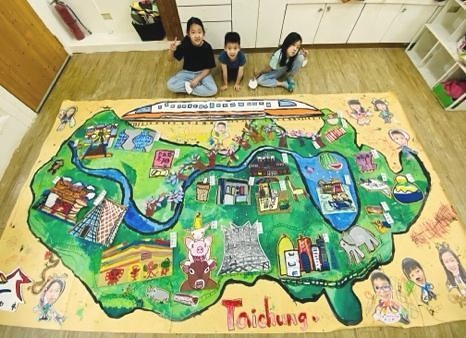
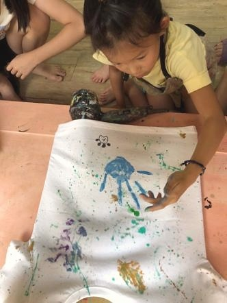
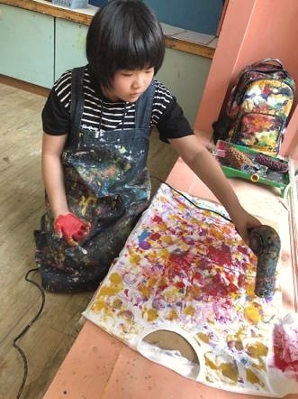
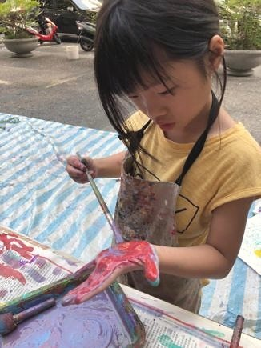
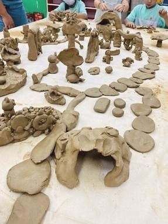
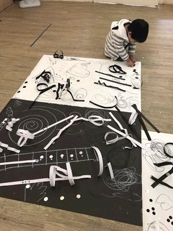

創作技法說明
製作班級故事牆 / 活動記錄卷軸 / 我的朋友成長冊 / 學期回憶地圖等 , 用繪圖、照片、手印、寫字共同完成。
40. 共同編年法 ( Collective Chronology Pedagogy ) 孩子共同建立「我們的時間故事」 , 用創作拼貼記憶與集體事件。






製作班級故事牆 / 活動記錄卷軸 / 我的朋友成長冊 / 學期回憶地圖等 , 用繪圖、照片、手印、寫字共同完成。
孩子在這個方法中，不只是使用材料或學習技巧，而是在嘗試中建立自己的判斷：我看見了什麼？我想怎麼改變？我可以用什麼方式表達？這些過程會慢慢累積成孩子面對世界的感受力、思考力與創造力。